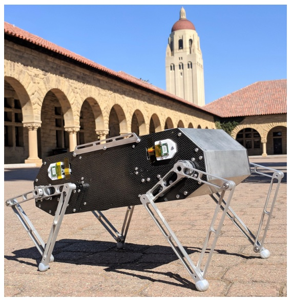
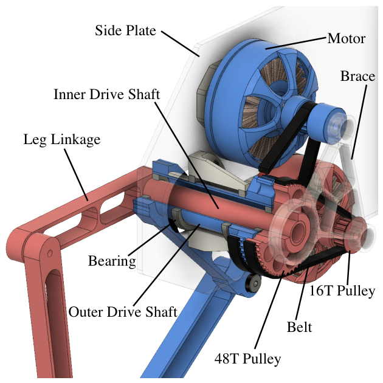
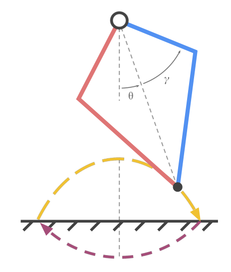
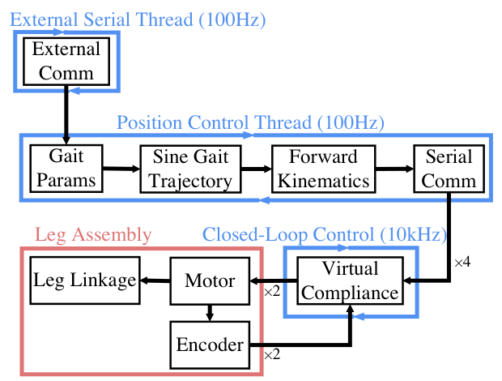
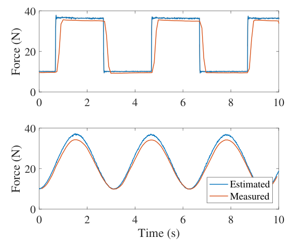

Background & Motivation
Stanford Doggo 是一台 4.8 kg、8 自由度、開源的四足機器人:每條五連桿腿由兩顆無刷馬達經 3:1 皮帶傳動(quasi-direct-drive, QDD)同軸驅動。它垂直跳高 1.14 m、垂直跳躍敏捷度 2.23 m/s——追平跳躍能力最強的動物 galago,比先前最佳機器人 Salto-1P 高 22%;整機材料+外包加工不到 3000 美元,只需手工具組裝。代價是開環正弦步態只跑 0.9 m/s。
Stanford Doggo is a 4.8 kg, 8-DOF, open-source quadruped: each five-bar leg is driven coaxially by two brushless motors through a 3:1 belt drive (quasi-direct-drive, QDD). It jumps 1.14 m with a vertical jumping agility of 2.23 m/s—matching the galago, the best-jumping animal, and 22% above the previous best robot, Salto-1P. Materials plus outsourced machining cost under $3000, assembled with hand tools only. The price: open-loop sinusoidal gaits top out at 0.9 m/s.

如果只有 30 秒In 30 seconds
- 問題 — 當時頂尖足式機器人要花多年開發、多為昂貴的客製設計;而四足機器人的垂直跳躍敏捷度遠不如專門化的單腳跳躍機器人(Salto-1P)。
- Problem — State-of-the-art legged robots take years to develop and are usually expensive custom designs; and quadrupeds' vertical jumping agility lags far behind specialized monopod hoppers (Salto-1P).
- 方法 — 改良 Minitaur 的五連桿腿:同軸巢狀雙驅動軸 + 3:1 皮帶 QDD(3D 列印塑膠皮帶輪),讓腿可 360° 旋轉;用「致動器縮放律」證明這個減速比在重量上划算;控制只用開環正弦足端軌跡 + 10 kHz 虛擬彈簧阻尼(PD)。
- Method — Improve Minitaur's five-bar leg with nested coaxial drive shafts + a 3:1 belt QDD (3D-printed plastic pulleys) so the leg can spin a full 360°; use actuator scaling laws to show the ratio pays off in mass; control with only open-loop sinusoidal foot trajectories + 10 kHz virtual spring-damper (PD).
- 結果 — 致動器比 Minitaur 的直驅馬達峰值力 +37%、連續扭矩 +76%,重量只 +8%、價格 $120 vs $280;力估測誤差 2.8–5.3%、頻寬約 150 Hz;跳高是其他四足的兩倍以上。
- Results — Versus Minitaur's direct-drive motor, the actuator gives +37% peak force and +76% continuous torque for only +8% mass, at $120 vs $280; force-estimation error 2.8–5.3%, bandwidth ~150 Hz; jump height more than double any other quadruped.
領域脈絡Field context
足式機器人的致動器設計長年在兩端拉扯:高減速比 + 串聯彈性(series-elastic actuator, SEA)能出大扭矩、但需要額外彈簧與力感測;直驅(direct drive, DD)沒有任何減速,馬達本身就能以 kHz 頻率「用控制模擬彈簧」,但扭矩小、馬達要很大很重。準直驅(QDD)是折衷:單級、減速比小於 10:1,在保留可反驅(backdrivable)的前提下放大扭矩,並能直接從馬達電流估算外力。
Legged-robot actuator design has long been pulled between two poles: high gear ratio + series elasticity (SEA) gives big torque but needs extra springs and force sensing; direct drive (DD) has no reduction at all, so the motor itself can "emulate a spring through control" at kHz rates—but torque is low and motors must be big and heavy. Quasi-direct drive (QDD) is the compromise: a single stage below 10:1 that amplifies torque while staying backdrivable, so external forces can be estimated directly from motor current.
兩個直接前輩:Minitaur(Kenneally 等 2016)把五連桿腿做成純直驅;MIT Cheetah 2 用大氣隙馬達 + 5.8:1 行星齒輪做 QDD。Doggo 的位置是:拿 Minitaur 的腿型、MIT Cheetah 的 QDD 哲學,但用便宜輕量的皮帶取代鋼製行星齒輪。
Two direct ancestors: Minitaur (Kenneally et al. 2016) built the five-bar leg as pure direct drive; MIT Cheetah 2 used large-gap-radius motors + a 5.8:1 planetary for QDD. Doggo's position: take Minitaur's leg topology and MIT Cheetah's QDD philosophy, but swap steel planetary gears for a cheap, light belt.
這篇的貢獻有一半不在「技術新穎」,而在「民主化」:把一台跳躍數據能進頂尖行列的機器人,壓到學生團隊做得出來的成本與工法。論文本身很短(6 頁、沒有閉環控制器),價值在於硬體設計的取捨與一套可以被複製的配方。[導讀補充]
Half the contribution isn't "technical novelty" but democratization: putting a robot with top-tier jumping numbers within reach of a student team's budget and tooling. The paper itself is short (6 pages, no closed-loop controller); its value lies in hardware trade-offs and a recipe others can copy. [guide note]
核心洞見 · KEY INSIGHTSKEY INSIGHTS
值得帶走的是幾個硬體設計觀念,而不只是一個跳很高的數字:
What's worth taking away are a few hardware-design ideas, not just one big jump number:
- 減速比要用「縮放律」來算帳。 馬達質量 \(\propto r\)、扭矩 \(\propto r^2\);要用更大馬達換到 \(N\) 倍扭矩,質量需乘 \(\sqrt N\)。所以只要傳動機構重量 \(\lt(\sqrt N-1)m\),QDD 就比「換大顆直驅」輕。Doggo 的皮帶組只有馬達重的 27%,遠低於 \(N=3\) 的門檻 73%。
- Do the gear-ratio accounting with scaling laws. Motor mass \(\propto r\), torque \(\propto r^2\); getting \(N\times\) torque from a bigger motor multiplies mass by \(\sqrt N\). So as long as the transmission weighs \(\lt(\sqrt N-1)m\), QDD beats "just use a bigger direct-drive motor." Doggo's belt assembly is only 27% of motor mass, far below the 73% threshold for \(N=3\).
- 皮帶是被低估的 QDD 傳動。 負載分散在多顆齒上 → 可以用塑膠、3D 列印 → 更輕、轉動慣量更低(更「透明」)、更便宜。相對地,行星齒輪在高扭矩下常需要鋼製齒輪。
- Belts are an underrated QDD transmission. Load spreads over many teeth → plastic, 3D-printable pulleys → lighter, lower inertia (more "transparent"), cheaper. Planetaries, by contrast, often need steel gears at high torque.
- 跳躍敏捷度幾乎是「跳多高」的函數。 [導讀補充] 若站立時間很短,\(A_v\approx\sqrt{g\,h/2}\);Doggo 的 2.23 m/s 已接近 1.14 m 對應的理論上限 2.36 m/s。這個指標獎勵高峰值功率、短蹬地時間,但不看落地、重複性、負載或能耗。
- Jumping agility is nearly a function of "how high." [guide note] With a short stance, \(A_v\approx\sqrt{g\,h/2}\); Doggo's 2.23 m/s is already close to the 2.36 m/s ceiling for a 1.14 m jump. The metric rewards high peak power and short push-off, ignoring landing, repeatability, payload and energy.
- 硬體上限 ≠ 系統表現。 跳高可以用開環測出硬體能力;但速度(0.9 m/s)與能耗(CoT 3.2)被開環步態卡住,作者自己也承認是控制、不是馬達在限制。
- Hardware ceiling ≠ system performance. Jump height can expose hardware capability under open-loop control; but speed (0.9 m/s) and efficiency (CoT 3.2) are bottlenecked by open-loop gaits—the authors admit control, not motors, is the limit.
- 平行連桿讓兩顆馬達的扭矩相加。 五連桿腿在同尺寸、同關節扭矩下,足端最大力比串聯腿大——再加上腿短(力臂短)與機身輕,是 Doggo 敏捷度勝過扭矩密度更高的 MIT Cheetah 2 的三個原因。
- Parallel linkages sum the two motors' torques. At equal size and joint torque, a five-bar leg yields more max foot force than a serial leg—together with short legs (short lever arm) and a light body, these are the three reasons Doggo out-jumps the higher-torque-density MIT Cheetah 2.
Problem Diagnosis
現況 vs 痛點Status quo vs pain points
| 現有做法Existing approach | 它的痛點Its pain point |
|---|---|
| 高減速比(常配 SEA / 彈性腿)High ratio (often with SEA / elastic legs) StarlETH (100:1), Cheetah-cub (300:1) | 剛性齒輪鏈需要串聯彈簧才能柔順;反射慣量大、難反驅、控制頻寬受限。A rigid gear train needs a series spring for compliance; high reflected inertia, hard to backdrive, limited bandwidth. |
| 純直驅Pure direct drive Minitaur, Jerboa (1:1) | 透明、高頻寬,但扭矩低;Minitaur 兩馬達分置腿兩側,連接結構擋住腿、無法整圈旋轉,工作空間受限。Transparent and high-bandwidth, but low torque; Minitaur mounts its two motors on either side of the leg, and the connecting structure blocks full leg rotation, limiting workspace. |
| QDD + 行星齒輪QDD + planetary MIT Cheetah 2 (5.8:1) | 性能強,但行星齒輪在高扭矩下需要沉重的鋼製齒輪;傳動質量約等於馬達質量;客製、昂貴。Strong, but planetaries at high torque usually need heavy steel gears; transmission mass roughly equals motor mass; custom and expensive. |
| 專用單腳跳躍機Specialized monopods Salto-1P | 垂直敏捷度最高(1.83 m/s),但只有一條腿,無法提供四足的穩定、負載、操作與跌倒恢復能力。Highest vertical agility (1.83 m/s), but a single leg—none of a quadruped's stability, payload, manipulation or fall recovery. |
核心問題:「能否用便宜、可複製的硬體,做出一台在敏捷度上追上專用跳躍機器人的四足?」另一個潛在痛點是頂尖平台多年開發、昂貴客製,把多數研究與教學團隊擋在門外。
The core question: "Can cheap, replicable hardware produce a quadruped whose agility rivals specialized jumping robots?" A second pain point: top platforms take years and are expensive custom builds, locking most research and teaching groups out.
Gap 表 — 誰缺什麼,Doggo 怎麼補Gap table — who lacks what, and how Doggo fills it
| 前作Prior work | 限制Limitation | Doggo 如何補上How Doggo fills it |
|---|---|---|
| Minitaur | 直驅扭矩不足;腿無法整圈轉;馬達 $280/顆。Direct-drive torque is limited; leg can't fully rotate; $280 per motor. | 同軸巢狀雙驅動軸讓腿可在機身外無限制旋轉;3:1 皮帶把峰值力 +37%;$120/顆。Nested coaxial drive shafts let the leg rotate freely outside the body; 3:1 belt gives +37% peak force; $120 per actuator. |
| MIT Cheetah 2 | 行星齒輪重(約等於馬達重);33 kg、客製。Heavy planetary (~motor mass); 33 kg, custom. | 塑膠 3D 列印皮帶輪,傳動只佔馬達重 27%;馬達佔整機 35%(Cheetah 2 為 24%)。Plastic 3D-printed pulleys; transmission is only 27% of motor mass; motors are 35% of robot mass (Cheetah 2: 24%). |
| Salto-1P | 單腳;敏捷度 1.83 m/s。One leg; agility 1.83 m/s. | 四足但敏捷度 2.23 m/s(+22%),跳高僅少 0.11 m。A quadruped with 2.23 m/s agility (+22%), jumping only 0.11 m lower. |
| 封閉/客製平台Closed / custom platforms | 複製門檻高。High replication barrier. | 全開源、<$3000、只需手工具(手鑽、烙鐵),超出能力的加工全部外包報價。Fully open-source, <$3000, hand tools only (drill, soldering iron); anything beyond is outsourced with online quotes. |
注意作者把「性能」窄化成一個他們最有優勢的軸:垂直跳躍。速度、能耗、地形、負載這些軸上 Doggo 並不突出,論文用「performs adequately」一筆帶過。這不是錯,但讀者要意識到「matches or exceeds state-of-the-art」主要靠跳躍指標撐起。[導讀補充]
Note that "performance" is narrowed to the axis where the authors are strongest: vertical jumping. On speed, efficiency, terrain and payload Doggo is unremarkable, which the paper covers with "performs adequately." Not wrong, but readers should see that "matches or exceeds state-of-the-art" rests mainly on jumping metrics. [guide note]
Core Method
[導讀補充] 入門:為什麼準直驅(QDD)重要?[guide note] Primer: why quasi-direct drive matters
一顆馬達接上 \(N:1\) 減速後,輸出端扭矩放大 \(N\) 倍,但輸出端「感覺到」的轉子慣量放大 \(N^2\) 倍,摩擦與齒隙也被放大:
Put an \(N:1\) reduction on a motor and output torque grows by \(N\), but the rotor inertia "felt" at the output grows by \(N^2\), and friction and backlash are amplified too:
這帶來三個後果,也就是低減速比的三大好處:
Three consequences follow—the three payoffs of a low ratio:
- 透明度 / 可反驅(backdrivability):\(N\) 小時,腿被外力推動,馬達能被「推回去」;撞擊時腿像彈簧般讓開,不會把衝擊硬吃進齒輪。
- Transparency / backdrivability: with small \(N\), an external push on the leg can drive the motor backward; on impact the leg yields like a spring instead of slamming the shock into the gears.
- 本體感測力控(proprioceptive force sensing):因為摩擦小,\(\tau\approx N K_t i\) 很準 → 用馬達電流就能估算足端力,不需要力感測器或串聯彈簧。
- Proprioceptive force sensing: with little friction, \(\tau\approx N K_t i\) is accurate → foot forces can be estimated from motor current alone, no force sensor or series spring needed.
- 高頻寬柔順控制:柔順性由 kHz 級電流迴圈「用控制模擬彈簧」,剛度與阻尼可即時調,而不是被實體彈簧固定。
- High-bandwidth compliance: compliance is emulated by a kHz current loop, so stiffness and damping are tunable on the fly instead of being fixed by a physical spring.
| 類型Type | 減速比Ratio | 柔順從哪來Compliance from | 取捨Trade-off |
|---|---|---|---|
| SEA | ~25–300:1 | 實體彈簧physical spring | 扭矩大;頻寬低、機構重high torque; low bandwidth, heavier mechanism |
| DD | 1:1 | 控制control | 最透明;扭矩低、馬達大most transparent; low torque, big motors |
| QDD | <10:1 | 控制control | 折衷:扭矩 ×N、仍可反驅compromise: torque ×N, still backdrivable |
這正是 MIT Cheetah 系列(Seok 2012、Wensing 2017)「proprioceptive actuator」的哲學;Doggo 把它用最便宜的零件重做一次。
This is exactly the MIT Cheetah line's "proprioceptive actuator" philosophy (Seok 2012, Wensing 2017); Doggo redoes it with the cheapest possible parts.
① 機構設計:同軸巢狀驅動 + 3:1 皮帶① Mechanical design: nested coaxial drive + 3:1 belt

為何選皮帶而非齒輪:皮帶把負載分散到多顆齒上,降低每齒負荷 → 可以用塑膠、3D 列印的皮帶輪 → 質量輕、轉動慣量低(提升透明度)、製造便宜。相比之下 MIT Cheetah 2 等使用的行星齒輪在高扭矩下通常需要沉重的鋼製齒輪。
Why belts instead of gears: a belt spreads load over several teeth, lowering per-tooth load → plastic, 3D-printed pulleys suffice → light, low inertia (better transparency), cheap to make. Planetaries such as MIT Cheetah 2's usually need heavy steel gears at high torque.
② 傳動原理:用縮放律判斷 QDD 是否划算② Transmission principles: is QDD worth it? Ask the scaling laws
作者引用 Seok 等人的馬達縮放律:若把電磁馬達的氣隙半徑 \(r\) 放大(假設質量集中在氣隙附近),
The authors use Seok et al.'s motor scaling laws: scaling an electromagnetic motor's gap radius \(r\) (assuming mass concentrated near the air gap),
要多 \(N\) 倍扭矩,有兩條路:(a) 加 \(N:1\) 減速;(b) 換一顆氣隙半徑 \(\sqrt N\) 倍的大馬達——它的質量也變成 \(\sqrt N\,m\)。因此 QDD 要「比換大馬達輕」,傳動機構質量必須滿足
To get \(N\times\) torque there are two routes: (a) add an \(N:1\) reduction; (b) use a motor with \(\sqrt N\times\) the gap radius—whose mass also becomes \(\sqrt N\,m\). So for QDD to be "lighter than a bigger motor," the transmission mass must satisfy
Doggo 的皮帶組只有馬達質量的 27%,遠低於門檻;換算整機 8 顆致動器約省 770 g(整機 16%)。作者也提醒:QDD 雖能滿足質量條件,但可能降低控制頻寬、效率與可靠度。
Doggo's belt assembly is only 27% of motor mass, well under the threshold; across 8 actuators that saves ~770 g (16% of the robot). The authors caution that although QDD can meet the mass criterion, it may reduce control bandwidth, efficiency and reliability.
論文引 [4] 說反射慣量「對 QDD 或 DD 的選擇不變」。但若套用論文自己列的 \(J\propto r^3\):同一馬達加 \(N:1\) 得 \(N^2J_0=9J_0\);等扭矩的大直驅馬達得 \((\sqrt N)^3J_0=N^{3/2}J_0\approx5.2J_0\)——兩者差 \(\sqrt N\approx1.7\) 倍。論文 Discussion 的數字也呼應這點:Doggo 對 Minitaur 是 2.7 倍慣量,而等扭矩的大直驅只要 2.4 倍。換言之 QDD 用「稍高的反射慣量」換「更輕的質量」,並非完全免費。
The paper cites [4] that reflected inertia is "invariant to the choice of QDD or DD." Yet applying the paper's own \(J\propto r^3\): the same motor with \(N:1\) gives \(N^2J_0=9J_0\); an equal-torque larger DD motor gives \((\sqrt N)^3J_0=N^{3/2}J_0\approx5.2J_0\)—a \(\sqrt N\approx1.7\times\) gap. The Discussion numbers echo this: Doggo has 2.7× Minitaur's inertia, while an equal-torque bigger DD would need only 2.4×. So QDD trades "slightly higher reflected inertia" for "lower mass"—not entirely free.
③ 五連桿腿與「虛擬腿」座標③ Five-bar leg and "virtual leg" coordinates

論文只說足端軌跡被轉成「期望腿角 \(\theta\) 與期望連桿張角 \(\gamma\)」,Jacobian 細節引用 Minitaur 的文獻 [22]。以下是對稱五連桿的標準推導 [導讀補充]:設兩馬達(同軸於髖)角度為 \(\phi_1,\phi_2\),上連桿長 \(l_1\)、下連桿長 \(l_2\),則
The paper only says foot trajectories are converted into a "desired leg angle \(\theta\) and desired link separation \(\gamma\)," citing Minitaur work [22] for the Jacobian. Below is the standard symmetric five-bar derivation [guide note]: with the two hip-coaxial motor angles \(\phi_1,\phi_2\), upper link length \(l_1\), lower link length \(l_2\):
足端位置是極座標 \((L,\theta)\):\(x=L\sin\theta,\ y=-L\cos\theta\)。\(\theta\) 管「腿往前/後擺」,\(\gamma\) 管「腿伸長/縮短」(\(\gamma\) 越大腿越短)。兩顆馬達同向轉 → 擺腿;反向轉 → 伸縮。這也說明了平行連桿為何讓兩顆馬達的扭矩相加:伸腿(蹬地)時兩顆馬達都出力。
The foot sits at polar \((L,\theta)\): \(x=L\sin\theta,\ y=-L\cos\theta\). \(\theta\) swings the leg fore/aft; \(\gamma\) extends/retracts it (larger \(\gamma\) → shorter leg). Motors turning together → swing; turning opposite → extend/retract. It also shows why a parallel linkage sums both motors' torques: during extension (push-off) both motors contribute.
④ 控制:開環正弦軌跡 + 虛擬柔順④ Control: open-loop sinusoids + virtual compliance

Teensy 3.5 依步態參數計算正弦足端軌跡,以 100 Hz 把 \((\theta^\ast,\gamma^\ast)\) 及對應的剛度/阻尼送到 ODrive;ODrive 以 10 kHz 做 FOC 換相與 PD:
The Teensy 3.5 computes sinusoidal foot trajectories from gait parameters and sends \((\theta^\ast,\gamma^\ast)\) plus stiffness/damping to the ODrives at 100 Hz; the ODrives run FOC commutation and PD at 10 kHz:
P 項 = 虛擬剛度、D 項 = 虛擬阻尼,合起來是「虛擬柔順腿」。廣義扭矩再經腿 Jacobian 轉成馬達扭矩;由虛功原理與上面的線性映射可得 [導讀補充]:
The P term = virtual stiffness, the D term = virtual damping—together a "virtually compliant leg." The generalized torques map to motor torques via the leg Jacobian; by virtual work and the linear map above [guide note]:
步態(walk、trot、bound、pronk)只靠調整正弦的幾何參數、虛擬柔順、以及每段花的時間來產生——沿用 Minitaur 證明過可行的開環方法。
Gaits (walk, trot, bound, pronk) come solely from tuning sinusoid geometry, virtual compliance, and per-segment timing—the open-loop method Minitaur showed to work.
彈簧加在 \(\gamma\)(角度)而非腿長 \(L\) 上。由 \(F_L\,dL=\tau_\gamma\,d\gamma\),等效徑向剛度約為 \(k_L\approx K_\gamma/L'(\gamma)^2\),會隨腿的伸展程度改變——腿伸直時 \(L'(\gamma)\to0\),徑向剛度變得很大。這是在 \((\theta,\gamma)\) 空間調 PD 時要知道的副作用。
The spring acts on \(\gamma\) (an angle), not on leg length \(L\). From \(F_L\,dL=\tau_\gamma\,d\gamma\), the effective radial stiffness is roughly \(k_L\approx K_\gamma/L'(\gamma)^2\), varying with extension—near full extension \(L'(\gamma)\to0\) and radial stiffness blows up. A side effect worth knowing when tuning PD in \((\theta,\gamma)\) space.
⑤ 量測方法與指標定義⑤ Measurement methods and metric definitions
力估測(透明度):把足端固定在髖正下方、以拉力接 LC201 荷重元(10 Hz 取樣,只看穩態)。馬達扭矩無法直接量,由電流推:
Force estimation (transparency): the foot is fixed under the hip and tied in tension to an LC201 load cell (10 Hz sampling, steady state only). Motor torque can't be measured directly, so it's inferred from current:
\(J\) 為五連桿腿 Jacobian(足端速度 = \(J\dot\phi\)),由 \(\tau=J^{T}F\) 反解。[導讀補充] 式 (1) 沒寫減速比;輸出端應為 \(N K_t I_m\),減速比顯然併入了 \(J\) 或 \(K_t\)。
\(J\) is the five-bar leg Jacobian (foot velocity = \(J\dot\phi\)), inverted from \(\tau=J^{T}F\). [guide note] Eq. (1) omits the gear ratio; at the output it should be \(N K_t I_m\), so the ratio is presumably folded into \(J\) or \(K_t\).
扭矩:槓桿壓秤;逐步加電流直到馬達在室溫 22 °C、無散熱下穩態達 125 °C(繞組常用上限) → 連續扭矩;峰值扭矩取 1 秒內最大力。頻寬:追蹤 4–12 Nm(模擬行走扭矩)、5–400 Hz 正弦,18 kHz 取樣,取 crossover 頻率。
Torque: a lever arm pressing on a scale; current is raised until the motor reaches a steady 125 °C (a common stator-winding limit) at 22 °C ambient with no cooling → continuous torque; peak torque = max force over one second. Bandwidth: track 4–12 Nm sinusoids (walking-like torques) from 5 to 400 Hz, sampled at 18 kHz; take the crossover frequency.
運動指標:穩態速度 \(v_{ss}\) 為跑 0.7 m 的平均速度;能耗用 cost of transport;跳高從蹲下時的重心量到頂點;垂直跳躍敏捷度是跳高除以「蹬地時間 + 升到頂點時間」:
Locomotion metrics: steady velocity \(v_{ss}\) over a 0.7 m run; efficiency via cost of transport; jump height measured from the crouched CoG to apex; vertical jumping agility = jump height over "stance time + time to apogee":
\(t_{\text{stance}}\):從開始致動到腳離地;\(t_{\text{apogee}}\):從離地到垂直速度為零。作者特地聯絡 Salto / Jerboa 的作者確認跳高量法一致,因為先前文獻沒說清楚。
\(t_{\text{stance}}\): from actuation onset to liftoff; \(t_{\text{apogee}}\): from liftoff until vertical velocity hits zero. The authors contacted Salto / Jerboa's authors to confirm the jump-height convention, since prior papers didn't specify it.
符號白話對照Symbols in plain words
| \(N\) | 減速比(Doggo:16T→48T 皮帶,\(N=3\))。Speed-reduction ratio (Doggo: 16T→48T belt, \(N=3\)). |
| \(r,\ m\) | 馬達氣隙半徑、馬達質量。Motor air-gap radius; motor mass. |
| \(K_t,\ I_m\) | 扭矩常數、馬達電流;\(\tau_m=K_tI_m\)。Torque constant; motor current; \(\tau_m=K_tI_m\). |
| \(J_{\text{refl}}\) | 反射慣量:從輸出端看的轉子慣量 \(=N^2J_{\text{rotor}}\);越小越「透明」。Reflected inertia: rotor inertia seen from the output \(=N^2J_{\text{rotor}}\); smaller = more "transparent." |
| \(\theta,\ \gamma\) | 虛擬腿角度、上連桿張開角(決定腿長)。Virtual leg angle; upper-link separation angle (sets leg length). |
| \(J\) | 腿 Jacobian:馬達角速度 → 足端速度;\(F=J^{-T}\tau\)。Leg Jacobian: motor angular velocity → foot velocity; \(F=J^{-T}\tau\). |
| \(K,\ D\) | 虛擬剛度、虛擬阻尼(PD 增益)。Virtual stiffness, virtual damping (PD gains). |
| \(A_v\) | 垂直跳躍敏捷度(m/s):近似「連續跳躍往上爬的速度」。Vertical jumping agility (m/s): approximates "climbing speed through repeated jumps." |
| CoT | 運輸成本:單位重量、單位距離耗的電功率(無因次)。Cost of transport: electrical power per unit weight per unit speed (dimensionless). |
Experimental Evidence
致動器對比:QDD vs DD(Tab. I)Actuator comparison: QDD vs DD (Tab. I)
| 指標Metric | Stanford Doggo MN5212, 3:1 | Minitaur [4] T-Motor U8, 1:1 | 差異Δ |
|---|---|---|---|
| 成本Cost | $120 | $280 | −57% |
| 質量 (kg)Mass (kg) | 0.27 | 0.25 | +8% |
| 連續扭矩 (Nm)Continuous torque (Nm) | 1.51 | 0.86 | +76% |
| 峰值扭矩 (Nm)Peak torque (Nm) | 4.8 | 3.5 | +37% |
| 最大連續功率 (W)Max continuous power (W) | 840 | 179 | ×4.7 |
| 反射慣量Reflected inertia \((\mathrm{kg\,m^2})\) | 0.00026 | 0.0001 | ×2.6 |
用+8% 質量換到 +37% 峰值、+76% 連續扭矩,價格不到一半;代價是反射慣量約 3 倍(論文文字寫「three times」、Discussion 寫 2.7 倍,表格數字算出 2.6)。扭矩密度 17.8 Nm/kg,遠低於 MIT Cheetah 2 的 58 Nm/kg;但 Cheetah 2 的傳動質量約等於馬達,Doggo 只有 27%。
+8% mass buys +37% peak and +76% continuous torque at under half the price; the cost is ~3× reflected inertia (text says "three times," Discussion says 2.7×, the table gives 2.6×). Torque density is 17.8 Nm/kg, far below MIT Cheetah 2's 58 Nm/kg; but Cheetah 2's transmission weighs about as much as its motor, Doggo's only 27%.
透明度:力估測 vs 荷重元(Fig. 6)Transparency: estimated vs load-cell force (Fig. 6)

步階 MAPE 2.8%、正弦 MAPE 5.3%;控制頻寬約 150 Hz(4–12 Nm 扭矩軌跡),作者指出高於 MIT Cheetah 2 報告的 104 Hz(馬達到足端力)。
Step MAPE 2.8%, sine MAPE 5.3%; control bandwidth ~150 Hz (4–12 Nm torque trajectories), which the authors note exceeds the 104 Hz (motor to foot force) reported for MIT Cheetah 2.
主結果:運動性能比較(Tab. III)Main results: locomotion performance (Tab. III)
| 機器人Robot | 穩態速度 (m/s)Steady vel. (m/s) | CoT ↓ | 最大跳高 (m)Max jump (m) | 垂直敏捷度 (m/s)Vert. agility (m/s) |
|---|---|---|---|---|
| Stanford Doggo | 0.9 | 3.2 | 1.14 | 2.23 |
| Minitaur | 1.5 | 2.3 | 0.48 | 1.12 |
| Salto-1P (單腳)(monopod) | 3.6 | 6.6 | 1.25 | 1.83 |
| Jerboa | 1.52 | 2.5 | 0.18 | 0.81 |
| MIT Cheetah 2 | 6.0 | 0.51 | 0.50 | 1.11 |
| MIT Cheetah 3 | N/A | 0.45 | N/A | N/A |
| StarlETH | 0.7 | 2.57 | 0.01 | 0.72 |
| ANYmal | 0.8 | 1.23 | N/A | N/A |
| Cheetah-cub | 1.4 | 9.8 | 0.02 | N/A |
| XRL | 1.54 | 2.57 | 0.31 | 0.92 |
跳高 1.14 m 是其他四足(最佳 Cheetah 2 的 0.50 m)的兩倍以上,只比專用單腳的 Salto-1P 少 0.11 m;垂直敏捷度 2.23 m/s 為所有機器人最高(比 Salto-1P 高 22%),並追平 galago [導讀補充:Haldane 2016 報告 galago 約 2.24 m/s]。但速度 0.9 m/s 幾乎墊底、CoT 3.2 高於 Minitaur 的 2.3。
A 1.14 m jump is more than double any other quadruped (best: Cheetah 2 at 0.50 m), only 0.11 m below the specialized monopod Salto-1P; 2.23 m/s vertical agility is the highest of all robots (22% above Salto-1P) and matches the galago [guide note: Haldane 2016 reports ~2.24 m/s for the galago]. But 0.9 m/s is near the bottom and CoT 3.2 is worse than Minitaur's 2.3.
物理特性(Tab. II 節選)與「三個原因」Physical properties (Tab. II excerpt) and the "three reasons"
| 機器人Robot | 腿/DOFLegs/DOF | 腿長 (m)Leg (m) | 質量 (kg)Mass (kg) | 馬達佔比Motor % | 減速比Ratio |
|---|---|---|---|---|---|
| Stanford Doggo | 4 / 8 | 0.160 | 4.8 | 35% | 3 |
| Minitaur | 4 / 8 | 0.200 | 5.0 | 40% | 1 |
| Salto-1P | 1 / 4 | 0.144 | 0.1 | 12% | 25 |
| Jerboa | 2 / 4 | 0.105 | 2.5 | 40% | 1 |
| MIT Cheetah 2 | 4 / 12 | 0.275 | 33.0 | 24% | 5.8 |
| MIT Cheetah 3 | 4 / 12 | 0.34 | 45.0 | N/A | 7.67 |
| StarlETH | 4 / 12 | 0.200 | 23.0 | 16% | 100 |
| Cheetah-cub | 4 / 8 | 0.069 | 1.0 | 16% | 300 |
Doggo 馬達佔整機質量 35%,與直驅的 Minitaur、Jerboa 相當,比同為 QDD 的 Cheetah 2 高 46%——更多質量花在出力而非結構與電子。作者歸納 Doggo 敏捷度勝過扭矩密度更高的 Cheetah 2 的三個原因:
Motors are 35% of Doggo's mass—on par with direct-drive Minitaur and Jerboa and 46% higher than the fellow-QDD Cheetah 2—so more mass goes to force production rather than structure and electronics. The authors give three reasons Doggo out-jumps the higher-torque-density Cheetah 2:
- 腿短:關節扭矩作用在較短的力臂上,足端力更大。
- Short legs: joint torque acts over a shorter lever arm, so foot force is larger.
- 皮帶輕:相較 Cheetah 2 的行星齒輪,大幅降低整機質量。
- Light belts: compared with Cheetah 2's planetaries, much lower total mass.
- 平行連桿:同尺寸、同關節扭矩下,兩顆馬達扭矩相加,足端最大力大於串聯腿。
- Parallel linkage: at equal size and joint torque, both motors' torques add, giving more max foot force than a serial leg.
縮放律算帳與可靠度Scaling-law accounting and reliability
| 論點Claim | 數字Number | 這證明什麼What it shows |
|---|---|---|
| 同輸出扭矩的直驅會比 QDD 的馬達重An equal-torque DD outweighs the QDD's motor by | +73% | \(\sqrt3-1\);皮帶只佔 27%,QDD 划算\(\sqrt3-1\); belt is 27%, so QDD wins |
| QDD 省下的總質量Total mass saved by QDD | 770 g (16%) | 輕量化直接轉為跳高lightness turns directly into jump height |
| 對 Minitaur 1.8× 連續扭矩的直驅替代DD alternative matching 1.8× Minitaur's torque | r ×1.3 → J ×2.4, m ×1.3 | 直驅版會比 Doggo 的 QDD 重 20%,慣量 2.4× vs 2.7×The DD version would be 20% heavier than Doggo's QDD; inertia 2.4× vs 2.7× |
| 可靠度Reliability | 數小時跑步 + 約 40 次跳躍hours of running + ~40 jumps | 僅需調整皮帶張力的少量維護(樣本很小)only minor maintenance (belt tension) (a small sample) |
實驗證明了什麼、沒證明什麼What the experiments do and don't prove
證明了:便宜的皮帶 QDD 在扭矩/質量/成本上優於同級直驅馬達,且能讓一台 4.8 kg 四足做出頂尖的單次垂直跳躍,靜態足端力可由電流準確估出。沒證明:閉環動態運動能力(速度、地形、抗擾)、長期耐久與熱極限、動態/撞擊時的力估測精度,以及跨平台指標比較的嚴格公平性。
Proven: a cheap belt QDD beats a comparable direct-drive motor on torque/mass/cost, lets a 4.8 kg quadruped achieve a top-tier single vertical jump, and static foot force can be estimated accurately from current. Not proven: closed-loop dynamic locomotion (speed, terrain, disturbance rejection), long-term durability and thermal limits, force-estimation accuracy under dynamics/impacts, and strict fairness of cross-platform metric comparisons.
Critical Reading
可被質疑的點Contestable points
- 敏捷度指標獎勵什麼、忽略什麼 [導讀補充]:若蹬地很短,\(A_v\approx\sqrt{g\,h_{\max}/2}\),所以它本質上是「跳多高」再乘一個蹬地時間懲罰。它獎勵高峰值功率與短促蹬地;懲罰需要蓄能的彈性機構(Salto)。它完全不看:能否連續重複跳(原始定義是「一連串跳躍的爬升速度」,但 Doggo 只報告「約 40 次跳躍」,沒有連續跳躍的數據)、落地穩定、水平移動、負載、能耗、尺寸。而且跳高從蹲姿重心起算,8→25 cm 的長行程腿會被額外加分。
- What the agility metric rewards and ignores [guide note]: with a short stance, \(A_v\approx\sqrt{g\,h_{\max}/2}\), so it is essentially "how high" times a stance-time penalty. It rewards high peak power and a quick push-off, and penalizes energy-storing elastic designs (Salto). It ignores: repeated continuous jumping (the original definition is "climbing speed through a series of jumps," yet Doggo reports only "approximately 40 jumps," with no continuous-jumping data), landing stability, horizontal motion, payload, energy, and scale. And because height is measured from the crouched CoG, long-stroke legs (8→25 cm) get extra credit.
- 跨平台比較的公平性:Tab. III 多數數字取自其他論文、測法未必一致——作者只和 Salto/Jerboa 作者確認量法。MIT Cheetah 2 的 0.50 m 引自 [25],[4],而 [25] 是高速奔跑中跳越障礙的研究,很可能不是專門的原地垂直跳測試;若是如此,拿來比原地最大跳高就像拿蘋果比橘子。33 kg、帶完整電子與運算的 Cheetah 2,與一台幾乎只為出力而設計的 4.8 kg 機器人,任務設計目標也不同。
- Fairness of cross-platform comparison: most Tab. III numbers are taken from other papers with possibly different protocols—the authors only confirmed the convention with Salto/Jerboa's authors. MIT Cheetah 2's 0.50 m is cited from [25],[4], and [25] studies running jumps over obstacles—likely not a dedicated standing vertical jump test; if so, comparing it with a max standing jump is apples to oranges. A 33 kg Cheetah 2 carrying full electronics and compute and a 4.8 kg robot built almost purely for force production also have different design goals.
- 開環 vs 閉環:速度 0.9 m/s、CoT 3.2 都被開環正弦步態卡住;系統沒有 IMU、沒有狀態估測。作者說「用閉環控制可望大幅提升」並引 Hwangbo 2019 的 RL,但這只是預期、沒有證據。「matches or exceeds state-of-the-art」的標題式說法,在跑步維度上並不成立。
- Open-loop vs closed-loop: 0.9 m/s and CoT 3.2 are bottlenecked by open-loop sinusoidal gaits; the system has no IMU and no state estimation. The authors expect "significantly higher" speed with closed-loop control, citing Hwangbo 2019's RL, but that is a projection, not evidence. The headline "matches or exceeds state-of-the-art" does not hold on the running axis.
- 熱極限沒有被量:連續扭矩是在無散熱、繞組達 125 °C 穩態下定義;峰值是 1 秒內最大值。跳躍用的是峰值區,但長時間奔跑、連續跳躍的溫升、降額(derating)、ODrive 與電池的電流上限都沒有報告。「840 W 最大連續功率」怎麼量的也沒說明——以 1.51 Nm 連續扭矩來看,這需要很高轉速,讀者無從驗證。
- Thermal limits aren't measured: continuous torque is defined at a 125 °C steady state with no cooling; peak is the max over one second. Jumps live in the peak regime, but temperature rise during long runs or continuous jumping, derating, and ODrive/battery current limits go unreported. How "840 W max continuous power" was measured is never explained—at 1.51 Nm continuous torque it implies very high speed, and readers can't verify it.
- 耐久性證據薄弱:「數小時跑步 + 約 40 次跳躍,只需調皮帶張力」就被稱為「quite robust」。3D 列印塑膠皮帶輪的齒面磨耗、皮帶伸長造成的背隙、落地衝擊對同軸軸承的疲勞都沒有量化;皮帶張力需要調整本身就暗示傳動剛性會隨時間退化,進而影響力估測精度。
- Thin durability evidence: "hours of running + ~40 jumps, only belt-tension adjustment" is called "quite robust." Tooth wear on 3D-printed plastic pulleys, backlash from belt stretch, and impact fatigue on the coaxial bearings are not quantified; needing tension adjustment itself hints that transmission stiffness degrades over time, which would erode force-estimation accuracy.
- 透明度實驗太窄:單一姿態、靜態、10 Hz 荷重元;估測值在高力時系統性偏高(Fig. 6)。頻寬 150 Hz 用的是「扭矩軌跡 crossover」,而 Cheetah 2 的 104 Hz 是「馬達到足端力」,定義不同卻直接比大小。
- Transparency tests are narrow: one pose, static, 10 Hz load cell; the estimate runs systematically high at large forces (Fig. 6). The 150 Hz bandwidth is a "torque-trajectory crossover," while Cheetah 2's 104 Hz is "motor to foot force"—different definitions compared head-to-head.
- 理論敘述的小矛盾:文中稱反射慣量「對 QDD/DD 不變」,但用論文自己的 \(J\propto r^3\) 推,QDD 的慣量多 \(\sqrt N\) 倍(見 03 METHOD);Discussion 的 2.7× vs 2.4× 也顯示不是完全不變。
- A small theoretical inconsistency: the text says reflected inertia is "invariant to QDD vs DD," yet the paper's own \(J\propto r^3\) gives QDD \(\sqrt N\times\) more (see 03 METHOD); the Discussion's 2.7× vs 2.4× also shows it isn't strictly invariant.
- 8 自由度的範圍 [導讀補充]:沒有髖外展關節,腿只在矢狀面動,側向踏步與側向平衡能力受限;與 12-DOF 的 Cheetah / ANYmal 比「性能」時,這個能力差距沒有被計入。
- Scope of 8 DOF [guide note]: with no hip ab/adduction, legs move only in the sagittal plane, limiting lateral stepping and lateral balance; this capability gap isn't counted when "performance" is compared with 12-DOF Cheetah / ANYmal.
- 成本口徑:$3000 為材料 + 外包加工估價,不含人工組裝時間、地面站、充電與除錯設備;沒有逐項 BOM 表在論文內(放在 repo)。
- Cost accounting: $3000 covers materials + outsourced machining quotes, excluding assembly labor, the ground station, chargers and debugging gear; no itemized BOM appears in the paper (it lives in the repo).
給讀書會 / 審稿的犀利問題Sharp questions for a reading group / review
- 指標偏好:如果改用「連續 10 次跳躍的平均爬升速度」或「單位質量的跳躍功率」,Doggo 與 Salto-1P、Cheetah 2 的排名還會一樣嗎?
- Metric bias: if we used "mean climb rate over 10 consecutive jumps" or "jump power per unit mass," would Doggo still rank above Salto-1P and Cheetah 2?
- 比較公平性:Cheetah 2 的 0.50 m 是奔跑跳越障礙的高度;若讓 Cheetah 2 做原地最大垂直跳,差距會剩多少?
- Fairness: Cheetah 2's 0.50 m is an obstacle-clearing running jump; if Cheetah 2 did a max standing vertical jump, how much of the gap would remain?
- 熱與耐久:連續 pronk 數分鐘,馬達溫度多久碰到 125 °C?塑膠皮帶輪在幾百次滿載跳躍後齒形是否變形?
- Thermal & durability: under minutes of continuous pronking, how soon do motors hit 125 °C? Do plastic pulley teeth deform after hundreds of full-load jumps?
- 為何 3:1:若做 2:1、4:1、6:1 的掃描,質量、反射慣量、跳高、力估測誤差的曲線長什麼樣?最佳點真的是 3:1 嗎?
- Why 3:1: sweeping 2:1, 4:1, 6:1—what do the curves for mass, reflected inertia, jump height and force-estimation error look like? Is 3:1 really the sweet spot?
- 閉環的承諾:加上 IMU + 狀態估測 + MPC / RL 後,0.9 m/s 能提升多少?控制改善之前,「硬體不是瓶頸」這個說法能被驗證嗎?
- The closed-loop promise: with an IMU + state estimation + MPC/RL, how far does 0.9 m/s improve? Before better control exists, can "the hardware isn't the bottleneck" even be verified?
Takeaways
對你研究的啟發Implications for your research
- 選致動器先算縮放律:\(m_{\text{trans}}\lt(\sqrt N-1)m\) 是個可帶走的快速判準;同時記得反射慣量以 \(N^2\) 成長,要在力控需求與重量之間取捨。
- Run the scaling laws before picking actuators: \(m_{\text{trans}}\lt(\sqrt N-1)m\) is a portable quick test; remember reflected inertia grows as \(N^2\), so trade force-control needs against mass.
- 硬體平台與控制要分開評估:做學習式或模型式控制的研究者,可以把 Doggo 類 QDD 平台當成「硬體上限很高、控制還有大量空間」的試驗床——但要先補 IMU 與狀態估測。
- Evaluate hardware and control separately: for learning- or model-based control research, a Doggo-style QDD platform is a testbed with "a high hardware ceiling and lots of control headroom"—after adding an IMU and state estimation.
- 本體感測力控很便宜:只要傳動透明,\(F=J^{-T}NK_ti\) 就能給出可用的足端力估計,接觸偵測、阻抗控制不一定需要力感測器。
- Proprioceptive force sensing is cheap: with a transparent transmission, \(F=J^{-T}NK_ti\) gives usable foot-force estimates; contact detection and impedance control don't necessarily need force sensors.
- 報告指標時要說清楚量法:這篇本身就示範了跨論文指標比較的困難(作者得寫信問)。自己發表時,把量測起點、試驗次數、變異度寫清楚。
- State your measurement protocol: this paper itself shows how hard cross-paper metric comparison is (the authors had to email other groups). When publishing, specify the reference point, trial count and variance.
在小型開源四足譜系中的位置 [導讀補充]Position among small open-source quadrupeds [guide note]
| 平台Platform | 傳動哲學Actuation philosophy | 與 Doggo 的關係Relation to Doggo |
|---|---|---|
| Minitaur (2016) | 純直驅、五連桿、8 DOFpure DD, five-bar, 8 DOF | 直系前輩:Doggo 沿用腿型與開環步態法,改成同軸 + 3:1 皮帶;Minitaur 後來商品化(Ghost Robotics)。Direct ancestor: Doggo keeps the leg topology and open-loop gait method, adding coaxial drive + 3:1 belt; Minitaur was later commercialized (Ghost Robotics). |
| MIT Cheetah 2 / 3 | 大氣隙客製馬達 + 單級行星(5.8:1、7.67:1)custom large-gap motors + single-stage planetary (5.8:1, 7.67:1) | QDD / proprioceptive actuator 哲學的源頭;Doggo 用現成馬達與皮帶做「平價版」。The source of the QDD / proprioceptive-actuator philosophy; Doggo is a "budget version" with off-the-shelf motors and belts. |
| Mini Cheetah (ICRA 2019) | ~6:1 行星 QDD、12 DOF、約 9 kg~6:1 planetary QDD, 12 DOF, ~9 kg | 同一屆 ICRA 的平行路線:同樣主打低成本 QDD,但保留行星齒輪與 12 DOF,並搭配 MPC/WBIC 閉環控制(見本庫 Kim2019 WBIC 導讀)——正好補上 Doggo 缺的控制那一半。A parallel track at the same ICRA: also low-cost QDD, but keeps planetaries and 12 DOF, paired with closed-loop MPC/WBIC (see this library's Kim2019 WBIC guide)—exactly the control half Doggo lacks. |
| Solo-8 / Solo-12 (ODRI, 2020) | 兩級皮帶 ~9:1、開源、力矩控制、約 2 kg 級two-stage belt ~9:1, open-source, torque-controlled, ~2 kg class | 同樣「皮帶 + 開源」的路線,但減速比更高、且一開始就面向閉環力矩控制研究。Same "belt + open-source" route, with a higher ratio and designed from day one for closed-loop torque-control research. |
| Stanford Pupper | 更便宜的教育取向後繼a cheaper, education-oriented successor | 同一學生團隊延續「降低門檻」的目標,犧牲性能換取更低成本。The same student group extends the "lower the barrier" goal, trading performance for even lower cost. |
值得引用的點What's worth citing
| 當你要主張…When you claim… | 就引這篇Cite this for |
|---|---|
| 「低成本、開源的動態四足平台是可行的」"Low-cost, open-source dynamic quadrupeds are feasible" | <$3000、手工具組裝、跳躍數據頂尖。<$3000, hand-tool assembly, top-tier jumping numbers. |
| 「皮帶可作為輕量 QDD 傳動」"Belts work as lightweight QDD transmissions" | 27% 馬達質量的傳動、+37% 峰值力、力估測 2.8–5.3% 誤差。Transmission at 27% of motor mass, +37% peak force, 2.8–5.3% force-estimation error. |
| 「QDD 減速比的質量門檻」"The mass threshold for QDD gearing" | \((\sqrt N-1)m\) 判準與其數值實例。The \((\sqrt N-1)m\) criterion and its worked numbers. |
| 垂直跳躍敏捷度的四足基準A quadruped baseline for vertical jumping agility | 2.23 m/s / 1.14 m(注意量法:由蹲姿重心起算)。2.23 m/s / 1.14 m (mind the convention: from the crouched CoG). |
Stanford Doggo 證明了:現成航模馬達 + 3:1 塑膠皮帶 + 五連桿腿,就能在 3000 美元內做出一台垂直跳躍敏捷度頂尖的開源四足;它把 MIT Cheetah 的 QDD 哲學平價化,但「讓它跑得好」的閉環控制仍是留給後人的那一半。
Stanford Doggo shows that off-the-shelf drone motors + a 3:1 plastic belt + five-bar legs can yield an open-source quadruped with top-tier vertical jumping agility for under $3000; it democratizes MIT Cheetah's QDD philosophy, while the closed-loop control that would make it run well remains the half left for others.